| |
|
DEMİRYOLU: PLAN EKSENİ TASARIMI
|
Bir demiryolu projesinde PLAN menüsünün kullanımı, bir karayolu güzergahı durumuna benzer, bu bölümde mevcut farklılıklar anlatılmaktadır. Makas dosyaları (.apv)
Makas yöneticisi Makasların geometrik hesabı. S makaslar Makaslar ve KM başlangıcı El değiştiriciler ve derayman aletleri Topuklara göre ayarla Kavşak kolunun ana topuktan çıktığı makaslar Poligonal makaslar Demiryolu güzergahlarında yönetmeliğin özellikleri
Demiryolları için .dip tablolarının kullanımı Zorunlu dever ve hız Bağlayıcılar ve makaslar Demiryolları için plan güzergahındaki temel fark, eksenler arası bağlantılarda makas kullanma imkanıdır. Demiryolu makaslarının ve kesişimlerinin geometrik tanımı, bağlayıcılar kullanılarak yapılmalıdır. 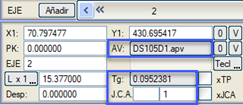Demiryollarında bağlayıcı kullanımının temel farkı, programın kütüphaneden bir makası AV alanına yüklemeye izin vermesidir. Bu durumda Tg değeri makas tarafından zorunlu kılınır ve değiştirilemez. Eğer herhangi bir makas beyan edilmezse, o zaman serbest açılı bir bağlayıcı tanımlanmaktadır, bu da karayollarında olduğu gibi, referans eksenine göre kavşak kolunun azimutunu kontrol etmek için Tg alanını kullanmayı mümkün kılar. J.C.A.'nın isimlendirilmesi için 2 kutucuk bulunur, sağdaki kutucukta her bir makasa bir numara atanır. Eğer her zaman 0 bırakılırsa, otomatik olarak numaralandırılırlar. Bu J.C.A. numaralandırmasına, en fazla dört karakterlik bir alfanümerik önek (soldaki kutucuk) eklenebilir. Örneğin, yolcu hatlarını (V0n) yük hatlarından (M0n) ayırmak için. Kütüphaneye, bu metni hem plan üzerinde makasın üstünde hem de koordinat tablosunda etiketlemeye olanak tanıyan bir APV2.ali çizim modu eklenmiştir. Makas kutucuğunun diyalog penceresinde, .apv dosyasının adı ve makasın sicil numarası ile bir ipucu belirir. 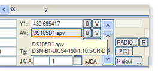 Kendi geometrisine sahip veya iç yarıçapı hesaplanan makaslar için, dairesel kurpun teğetinden sapan hattın topuğuna kadar olan artık aliyman uzunluğu, eksen hesaplandığında elde edilir ve diyalog penceresinde aliyman uzunluğu olarak yeniden atanır. Bu şekilde, eğer eksen sadece bu makastan oluşuyorsa veya ardından bir bağlantı aliymanı eklenirse, sapan hattın topuğunda bir tekil nokta belirir. Makas dosyaları (.apv) Her makas, kütüphanede, ASCII formatında ve .apv uzantılı bir dosyada tanımlanmıştır. ISTRAM®/ISPOL® en yaygın olanları içerir ve diğerlerini tanımlamak için örnek olarak kullanılabilir. Her dosyanın adı, onu tanımlamaya yardımcı olan geometrik özelliklerinin bir kısaltmasıdır. 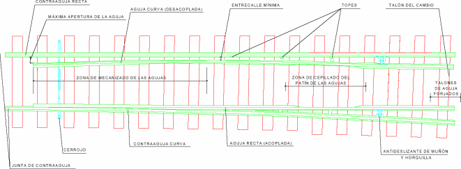
Aşağıda bir makas dosyası örneği, DS09D54.apv dosyası, ve bu makasın farklı kısımlarını görebileceğiniz bir resimle birlikte gösterilmektedir:
Programın .apv dosyalarında yorumladığı komutlar şunlardır:
Eğrisel göbekli makaslarda iki tanjant olduğunu ve bu açının topukta ölçülüp sapan hat için uygulandığını unutmamak gerekir. Kesişimler de, ikinci hattın kesişimden sonra sağa mı yoksa sola mı çıktığına göre sağa ve sola tanımlanmalıdır. Sapan hattın uzunluğu (LD), sadece kesişimler durumunda ikinci kolun toplam uzunluğunu tanımlamak için kullanılır. Eğer verilmezse, doğru hattın uzunluğu (L) kullanılır. Merkez-topuk uzunluğu, literatüre göre bir kısaltma veya diğeri kullanıldığı için, A veya C olarak farksız bir şekilde tanımlanır. Eğer farklıysa, sapan hattın merkez-topuk uzunluğu için AD veya CD komutu verilmelidir. Eğer verilmezse, sapan hattın topuk uzunluğu olarak da A veya C kullanılır. M sicil numarası, tüm makasların tanımına eşlik eden alfanümerik bir anahtardır ve geometrisinin bir kısaltmasıdır. Hesaplayıcı, esas olarak şematik grafik gösterimi için sicil numarasının ilk harflerini kullanır. Sicil numarasının ilk harfleri için izin verilen tek değerler şunlardır: DS, DH, DR, DI, DM, EW, TS, TM, TU ve TUD. Program kütüphanesinde mevcut olan makaslar arasında, aşağıdaki makas tiplerinin varlığını vurgulamaktayız: T1668-1435D11.apv ve T1668-1435I11.apv. Farklı genişlikteki ve ana hat ile sapan hatta farklı uzunluktaki iki hat arasındaki geçişleri tanımlarlar.
İç geometrisinde JCA:Aliyman-Klotoid-Daire-Klotoid bulunan makasları kullanma imkanımız vardır.
İlk klotoid bir yarıçapla başlayabilir (Sonsuzdan küçük ve daire yarıçapından büyük). Kütüphane içinde, bu seçeneği içeren DS_ARA_d.apv ve DS_ARA_i.apv makaslarını ayırt ediyoruz. *.apv makas tanımlama dosyalarına, bazı makaslardaki sapan hattın ekseninin iç geometrisini tanımlamak için üç yeni parametre eklenmesine izin verilir:
Kütüphaneye, GRR komutunu kullanan *.apv dosyaları dahil edilmiştir:
Makas yöneticisi ISTRAM®/ISPOL® kurulumunda, makasları (dosyalar .apv) yönetmek (düzenlemek ve görüntülemek) için basit bir araç mevcuttur. AparatosVia adlı uygulama, kütüphane aramaları yapmanın yanı sıra, aynı anda birkaç kütüphaneyi yönetebilir:  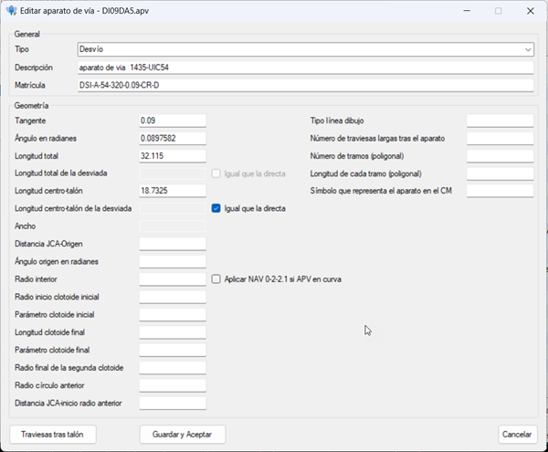
Makas tanımlama dosyaları (*.apv) düzenleyicisinde yer alan bazı gelişmiş parametreler:
Bu yönetici içinde, ana ve sapan topuklardan sonra bazı traverslerin göreceli konumu da tanımlanabilir (her durumda 100'e kadar) ve sapan topuktakiler için bir vinoluk da tanımlanabilir (grad cinsinden ve mutlak değer olarak). Bununla, topuktan sonra ana ve sapan eksenin travers uçlarının çakışması önlenmek istenir. Istram ile kurulan Demo/Aparatos klasöründe bu traversleri kullanan FFCC_BIM.isa örneği mevcuttur. Traverslerin gerçekten bu bilgilere göre yerleştirilmesi için, Hat ve Travers/Ray menüsünde, Teorik kaynakları oluştur aracını kullanmak, Makaslar'da ray başlatma olaylarını etkinleştirmiş olmak ve ayrıca şu seçenekleri etkinleştirmek gerekir:
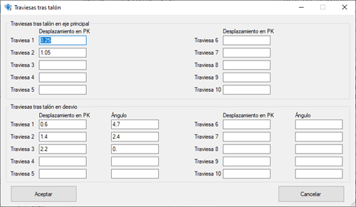
Kütüphanede aşağıdaki makaslar mevcuttur:
Makasların geometrik hesabı. S Makaslar Eğer iki makas ardı ardına tanımlanırsa (tanjant açılı eksen bağlayıcıları da geçerlidir), program ikincisini, tanjant açısını koruyarak, birinci makasın sapan-topuğuyla hizalanana kadar ana ekseni üzerinde kaydırır (birinci makasın tanjant açısı gereksiz bir veridir) ve iki sapan-topuk arasında bir aliyman oluşturur. İlk eksen, makas bölgesinde herhangi bir geometri türüne (aliyman, kurp veya klotoid) sahip olabilir. Hesaplayıcı, bir ana kurp üzerine yerleştirilmiş makasların durumunu çözer. İkincisi şu olabilir:
Kontrol olarak şunlar yapılabilir: S MAKASLAR 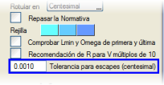Eğer iki makas aynı tanjanta sahipse, referans eksenleri paralel olmalı veya aşağıda açıklandığı gibi s makaslar için toleranstan daha az bir sapmaya sahip olmalıdır. ISTRAM®/ISPOL®, s makasların (iki paralel eksene dayanan iki makastan oluşan iki aliymanlı eksenler) tasarımı için bir tolerans açısıyla (grad cinsinden) çalışır. Paralel olmayan iki eksen arasında veya farklı tanjantlı makaslarla bir s makas tanımlandığında, azimutta belirli bir toleransa izin verilir. Program, ikinci makasın konumunu otomatik olarak arar ve iki makas tarafından indüklenen eksenin azimutunu belirler. Eğer azimut farkı tolerans değerini aşarsa, listede, mesaj satırında ve TASARIM → HATALAR seçeneği kullanıldığında HATALAR ızgarasında bir mesaj yazdırır. Bu toleransın değeri, Yapılandırma → Tercihler → Seçenekler → Lineer Proje → Plan menüsünden yapılandırılabilir. S MAKASLARIN OPENBIM'E TEK BİR BLOK OLARAK AKTARILMASI Demiryolu plan eksenlerinde, yeni seçenek etkinleştirilebilir: [] S Makas. S makas olarak nitelendirilen bir eksenin tüm traversleri ve rayları, ayrıca makasları (genellikle biri başta diğeri sonda) BIM'e tek bir blok olarak aktarılabilir. 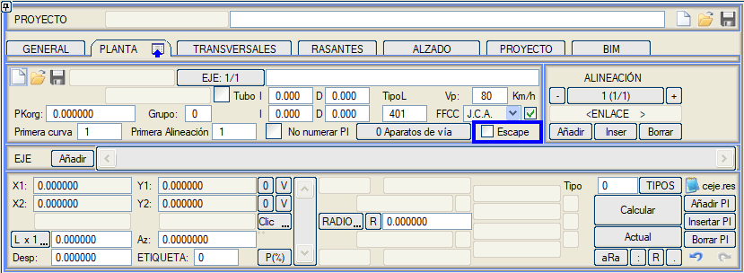
Makaslar ve KM Başlangıcı 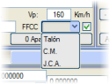PLAN → EKSENLER penceresinde, bir FFCC değişkeni, sapan hattın KM başlangıcının topuk, matematiksel merkez veya dil ucu birleşim yeri (varsayılan) olup olmadığını tanımlamaya olanak tanır. Varsayılan olarak, bir sapan eksenin başlangıç KM'si Dil Ucu Birleşim Yerinde (J.C.A.) ayarlanır. Bir makasta başlayan veya biten eksenlerde, eğer dil ucu birleşim yerinde J.C.A.'da başlayıp bitmeleri seçilirse, ayrıca  seçeneği ile sapan hattın ekseninin makas içinde bir dairesel yay
aracılığıyla oluşturulması da seçilebilir. Bu yay, JCA-CM ve CM-TD
doğrularına teğettir. JCA-CM segmentinin CM-TD'den daha kısa olduğu
durumda, yay JCA'da başlar ve tersi durumda yay, J.C.A. ve C.M.
(matematiksel merkez) tarafından oluşturulan doğruda başlangıç teğetliği
aranarak TD'de (sapan hattın topuğu) biter.
seçeneği ile sapan hattın ekseninin makas içinde bir dairesel yay
aracılığıyla oluşturulması da seçilebilir. Bu yay, JCA-CM ve CM-TD
doğrularına teğettir. JCA-CM segmentinin CM-TD'den daha kısa olduğu
durumda, yay JCA'da başlar ve tersi durumda yay, J.C.A. ve C.M.
(matematiksel merkez) tarafından oluşturulan doğruda başlangıç teğetliği
aranarak TD'de (sapan hattın topuğu) biter.Dil, makas ve göbeğin gerçek yarıçapları ve uzunlukları bilinmediğinde; bu eksen boyunca km gelişimi, JCA-CM-TD doğrularını kullanmaktan daha hassastır. Ana yoldaki Makasın yerleştirme noktası, Matematiksel Merkez yerine Dil Ucu Birleşim Yeri olabilir.  Eğer son aliymanda bir makas
tanımlanmışsa ve önceki bir aliyman ise (2 nokta ile veya etiketle veya
bağlantıyla), o zaman ana eksen üzerindeki CM, bu aliymanın bu eksenle
kesişimiyle hesaplanır, ancak bu noktada ana ve sapan eksen arasındaki
azimut farkının makasın açısıyla çakışacağı garanti edilemez.
El değiştiriciler ve derayman aletleri 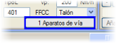Buraya (Makaslar), üç raylı hatlardaki el değiştiriciler gibi sadece mevcut eksene bağlı bir makas listesi eklenebilir. ISTRAM®/ISPOL® kütüphanesinde örnek olarak CM_1668.apv dosyası bulunmaktadır. Hesaplama yapıldığında, .ali dosyasının yapılandırmasına göre planla birlikte çizilir. Bu tür makaslara Mesafe sütununda yanal bir kaydırma girilebilir. Ayrıca konumları apavia.res listelerinde de yazdırılır. Aynı şekilde, bir düşey kurp ile çakışıp çakışmadığının kontrol edildiği kırmızı kot tasarım menüsünde de gösterilir. Ayrıca, geçişler ve makaslarla birlikte boykesit çiziminde de gösterilir. Derayman aletleri: Kütüphanede, bir eksenin bir KM'si üzerine yerleştirilen bir makas tipine karşılık gelen dosyalarımız mevcuttur: Derayman aletleri, 2'si pozitif yarıçaplı ve 2'si negatif yarıçaplı, ileri ve geri hareket yönü için: SW_B3368R+211A.APV, SW_B3368R+211R.APV, SW_B3368R-211A.APV, SW_B3368R-211R.APV. Topuklara göre ayarla Plan->Aliymanlar->Tipler->Eksenler arası bağlantı diyalog kutusunda, kavşak kolunun ilk aliymanı sabitlendiğinde, makasın konumunu şu şekilde arayabiliriz:
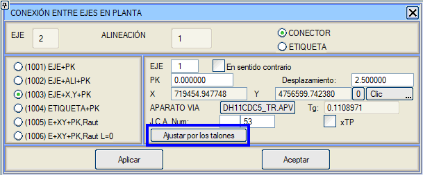 Kavşak kolunun Ana Topuktan çıktığı makaslar. Bir hatlar grubunun dış hattı boyunca düz devam eden kavşak kollarındaki makasları yerleştirmek için [] xTP seçeneği eklenir:
Poligonal makaslar Poligonal makaslarla çalışma imkanı. Bu makaslarda sapan hat, eşit uzunlukta (örneğin 5.5) ve aralarında aynı açıyı oluşturan bir dizi aliymandan (4, 5 veya 6) oluşur. Birincisi, ana hatla bu açının yarısını oluşturur. Sonuncusunun ana hatla yaptığı açı, makasın tanjantını tanımlar. Makasın uzunluğu, bölüm sayısı ile her bölümün uzunluğunun çarpımına eşittir. Kütüphaneye iki örnek dahil edilmiştir: DS_Poligonal_4x55_019D.apv ve DS_Poligonal_4x55_019I.apv Demiryolları için yönetmelik ve tasarım tabloları Demiryolu kuruluşları tarafından yayınlanan demiryolu güzergah yönetmelikleri, bir dairesel aliymanın minimum yarıçapını, her bir daireye karşılık gelen deveri ve geçiş eğrisinin uzunluğunu belirlerken uygulanacak bir dizi geometrik ve dinamik parametreyi tanımlar. Genellikle, bu kuruluşlar verileri demiryolu taşıtlarına, konforlu (normal) veya zorunlu koşullardaki seyir türüne göre düzenler ve ayrıca özelliklerini yıldan yıla değiştirebilirler. Bu özellik, ISTRAM®/ISPOL®'un çalışma felsefesinde yer alır ve kullanıcıya farklı seyir modları veya senaryoları seçme imkanı sunan tasarım tablolarının kullanılmasına olanak tanır ve böylece farklı alternatifleri doğru ve hızlı bir şekilde değerlendirmeyi sağlar. Her bir dairesel aliymanda uygulanan deverlerin belirlenmesi, demiryolu dolaşım dinamiğiyle ilişkili fiziksel formüller kullanılarak elde edilir ve uluslararası uygulamaya sahiptir. İspanya'da bu formülasyon ADIF, Madrid Metrosu, UNE-ENV 13803-1 EX normu vb.'de bulunabilir. Planın sağ tarafındaki sabit menüden, Tasarım'a tıklayarak, Yönetmeliği Gözden Geçir seçeneği, geovia.res listesini oluşturur; bu liste, son sütunda, ilişkili tasarım tablolarında belirtilen aralıklara göre farklı tasarım parametrelerinin olası sapmalarını gösterir. Bu liste, C ve S şeklindeki kurplar arasında mevcut aliymanların minimum uzunluklarının uygunluğunu kontrol eder. 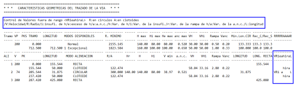
Kütüphaneye FFCC_ADIF_2021.dip tasarım tablosu eklenmiştir. Demiryolu güzergahlarında yönetmeliğin özellikleri Belirli bir seyir hızı için ve formülasyona bağlı olarak minimum yarıçap elde edilir. Buna, izin verilen maksimum dever değeri karşılık gelir. Ancak, mantıksal olarak, daha düşük bir dever ve daha düşük bir dever noksanlığı (ve daha düşük bir kompanse edilmemiş ivme) gerektiren daha büyük yarıçaplar kullanılmalıdır. Uygulanan noksanlıkları kabul etmek proje mühendisinin sorumluluğundadır. Minimumdan büyük bu yarıçaplar için, uygulanacak deverlerin belirlenmesi, oransal bir kanun veya güvenlik tarafında bir artış sabiti uygulamasından oluşabilen tasarım özelliklerine göre hesaplanır. Her durumda, ISTRAM®/ISPOL®, bir dever tablosu kullanmaya gerek kalmadan bunları otomatik olarak hesaplar (çünkü formülasyonla elde edilirler). Ayrıca ‘yavaş trenlerin’ hızı da dikkate alınmalıdır. Uyumlu minimum hız, hattın kabul edebileceği maksimum dever fazlalığı ile belirlenir (devrilmeyi ve rayların aşırı aşınmasını önlemek için). Demiryolu güzergahındaki geçiş eğrilerinin işlevi, aliyman ile dairesel aliyman arasında uygun bir dever geçişi sağlamaktır ve devere ve seyir hızına bağlı belirli formüllere göre belirlenir. Kesin bir yarıçap-dever ilişkisi olmasına rağmen, başka bir dever kullanma imkanı vardır, bu da farklı bir geçiş eğrisi uzunluğu anlamına gelir. ISTRAM®/ISPOL®, dever noksanlığı ve kompanse edilmemiş enine ivme için izin verilen sınırlar içinde olduğu sürece formülasyonla elde edilenden farklı bir dever uygulama imkanı sunar. Gerekenden daha düşük bir dever uygulamak, geçiş eğrilerinin boyutunu azaltmaya olanak tanır, çünkü bunların işlevi deveri sıfır değerinden kurbun değerine geliştirmektir (karayolu projelerinde olduğu gibi başka parametreler yoktur). Demiryolları için .dip tablolarının kullanımı Bu tablolar, tek bir seyir hızı için veya birkaç kategori, mod ve ilişkili seyir hızı aralığı için tasarım sabitlerini içerebilir (birçok yönetmeliğin ruhunu yansıttığı gibi). Bu tablolarla, ISTRAM®/ISPOL® aşağıdaki işlemleri otomatik olarak gerçekleştirir:
FFCC_ADIF.dip tablosu, ayrıca KIRMIZI KOTLAR menüsünde yönetmeliğin gözden geçirilmesi için kullanılan aşağıdaki parametreleri kontrol etmeye olanak tanır:
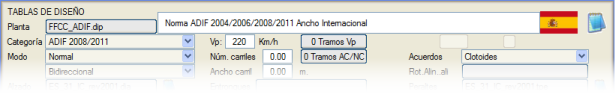
Tasarım tablolarında birkaç seyir modu belirtilebilir. Normalde normal ve istisnai modlar tanımlanır, ancak yük trenleriyle seyre, karma trafiğe vb. ilişkin modlar tanımlamak da mümkündür. Seyir modları ayrıca bölümlere göre ( proje hızının bölümlendirilmesine bağlı olarak) ve her aliyman için de (zorunlu dever/hız tablosunda) beyan edilebilir. .dip tablosunda, her hız aralığı, bir hız kapsamıyla ilişkili bir dizi blok veya alt tablo ile tanımlanır ve her moda ilişkin parametreleri içerir. Örneğin, ADIF istisnai veya zorunlu mod için daha yüksek deverler tanımlar, bu da prensipte normal moddakilerden daha küçük yarıçaplar kullanmaya olanak tanır. Bu parametrelerin kullanımı proje mühendisinin takdirindedir. Kütüphanede, Katalonya Demiryolları yönetmeliğine göre yarıçapların, klotoidlerin ve deverlerin hesaplanması için bir .dip tablomuz bulunmaktadır (FFCC_CAT_a.dip). PROJE HIZI  Seyir veya proje hızı
çeşitli şekillerde belirtilebilir. Başlangıçta ve karayolu projelerinde
olduğu gibi, GENEL sekmesinde, Vp alanında tanımlanabilir.
Belirli bir bölüme başka bir hız uygulamak gerekirse, o zaman [Vp Bölümleri] düğmesine basıldığında gösterilen diyalog kutusu kullanılmalıdır. Seyir veya proje hızı
çeşitli şekillerde belirtilebilir. Başlangıçta ve karayolu projelerinde
olduğu gibi, GENEL sekmesinde, Vp alanında tanımlanabilir.
Belirli bir bölüme başka bir hız uygulamak gerekirse, o zaman [Vp Bölümleri] düğmesine basıldığında gösterilen diyalog kutusu kullanılmalıdır. Bu durumda, bir karayolu projesinden farklı olarak, her bir KM bölümü için ayrıca farklı bir seyir modu da ilişkilendirmek mümkündür. Bu şekilde, istasyonlardan geçiş, zorlu arazi koşulları veya hassas şehir içi güzergahlar tarafından dayatılan seyir kısıtlamaları getirme olasılığı veya gerekliliğiyle kullanıcının basitçe başa çıkmasına olanak tanıyan genel bir bölümlendirme oluşturmak mümkündür. Hem bir karayolu hem de bir demiryolu projesinde, her eksen için proje hızı bölümlerinin tanımını Listeleyebiliriz. KULLANILAN YÖNETMELİK HAKKINDA BİLGİ KUTUSU 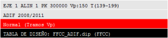Çalışma ekseni ve mevcut aliymanla ilişkili veriler, PLAN ekranının sol alt köşesinde görüntülenir. Burada şunlar gösterilir:
.dip TABLOSU TARAFINDAN ÖNERİLEN YARIÇAPLARIN VE GEÇİŞ UZUNLUKLARININ KULLANIMI Her bir çalışma parametresi alt tablosu için (hız, kategori ve mod), genel olarak (tüm eksen için) veya özel olarak (bölüm veya aliyman başına), program tarafından hesaplanan ve veri seçim pencerelerinde sunulan sayısal değerlerden faydalanmak mümkündür. Demiryolu güzergahı durumunda ve karayolu projelerinden farklı olarak, bu pencereler, dever noksanlıkları, kompanse edilmemiş ivme, geometrik, dinamik veya konfor sınırlamalarına bağlı olarak geçiş eğrisi uzunlukları gibi kullanıcı için ilgi çekici olabilecek çeşitli parametrelerin farklı özetlerini gösterir. Tasarım tablolarını kullanmanın ilk faydalarından biri, en uygun yarıçapı kullanabilmek ve ilişkili parametrelerini bilmektir. GENEL sekmesinde, tasarlanan demiryolu .dip tablosunun yüklenmiş olması ve proje modu ve hızının beyan edilmiş olması gerekir. [R] düğmesine basıldığında, 10 mm'lik bir deverden başlayıp izin verilen maksimuma kadar giden bir seriye ilişkin kombinasyonların bir listesi açılır. Ayrıca, maksimum hız ve çalışma hızıyla ilişkili minimum yarıçaplar, seyir modu ve mevcut yarıçap ile dever (hp), dever noksanlığı (hi) ve kompanse edilmemiş ivme (anc) verileri gösterilir. 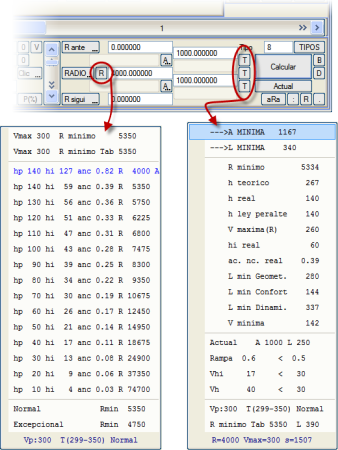
Bu pencerenin alt kısmında ayrıca, kullanılabilecek olası modların minimum yarıçapları gösterilir ( FFCC_ADIF.dip tablosu durumunda Normal ve İstisnai'dir, ancak daha fazla mod tanımlamak mümkündür). Demiryolu güzergahında geçiş eğrileri, doğru bir dever geçişi gerçekleştirmekle görevlidir. Bu uzunluk, devere, kullanılan yarıçapa ve seyir hızına bağlı olarak hesaplanır. Demiryolu güzergahında A (parametre) yerine L (uzunluk) kullanmak daha yaygındır. Dever, hız ve sınırlayıcı değerleri kullanarak:
Ayrıca, eğer .dip tablosu bir dizi tablolanmış değer içeriyorsa (genellikle demiryolu kuruluşları tarafından yayınlanan tabloları yeniden üretir), bu değer de alınır ve önceki üçüyle karşılaştırılır ve hepsinden en büyüğü seçilir. [T] düğmesine basıldığında, minimum L değerini ve ardından kullanılan verilerin bir özetini ve faydalı olabilecek birkaç parametrenin sonuçlarını sunan bir pencere açılır. Gösterilen teorik dever şu formüle karşılık gelir:
Ancak, gösterilen gerçek dever (hr), önceki değer ile izin verilen maksimum dever (hmaks) arasındaki en küçük değere karşılık gelir. Pencerenin ikinci bölümünde, mevcut geçiş eğrisiyle ilişkili değerlerin bir özeti gösterilir (eğer tanımlıysa). Hem yarıçap seçim penceresi hem de geçiş eğrilerinin uzunlukları veya parametreleri penceresi, alt kısımda aliymanda kullanılan seyir hızını ve modu hakkında bilgi verir.
Zorunlu dever ve hız Bu grafiksel dever hesaplayıcısı, her aliyman için yarıçapını, o aliyman için proje hızını veya maksimum hızı ve deveri değiştirmeye olanak tanır. Klotoidleri aynı anda hesaplamaya ve değiştirmeye izin verir. Dever arttığında veya azaldığında, noksanlık azalır veya artar. Grafikte, izin verilen sınırların dışına çıkılırsa bir uyarı gösterilir. Klotoid öneri tablolarında, eğer tanımlıysa, zorunlu dever kullanılır. Tanımlanan dairesel kurp için özel koşullar kullanılabilir (yarıçapı düşürüp deveri artırmak, deveri düşürüp noksanlığı artırmak, kurptaki hızı düşürmek,...). Genellikle, belirli bir trafiğe izin vermek, çevresel bir dayatma, çok fazla alternatif sunmayan bir şehir içi güzergah gibi belirli durumlarda kullanılırlar. 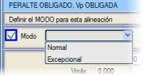 [P(%)] düğmesine basıldığında, belirli bir kurp için özel bir seyir modu seçmek ve yarıçap, hız veya dever değerlerini değiştirmek mümkündür; bu sırada hesaplayıcı dever, dever noksanlığı, geçiş eğrisi uzunluğu vb. değerleri günceller. Normal (M1) veya istisnai (M2) bir mod uygulamak, yüklenen .dip yönetmelik tablosunda (örneğin FFCC_ADIF.dip) tanımlanan parametrelerle ilgilidir. 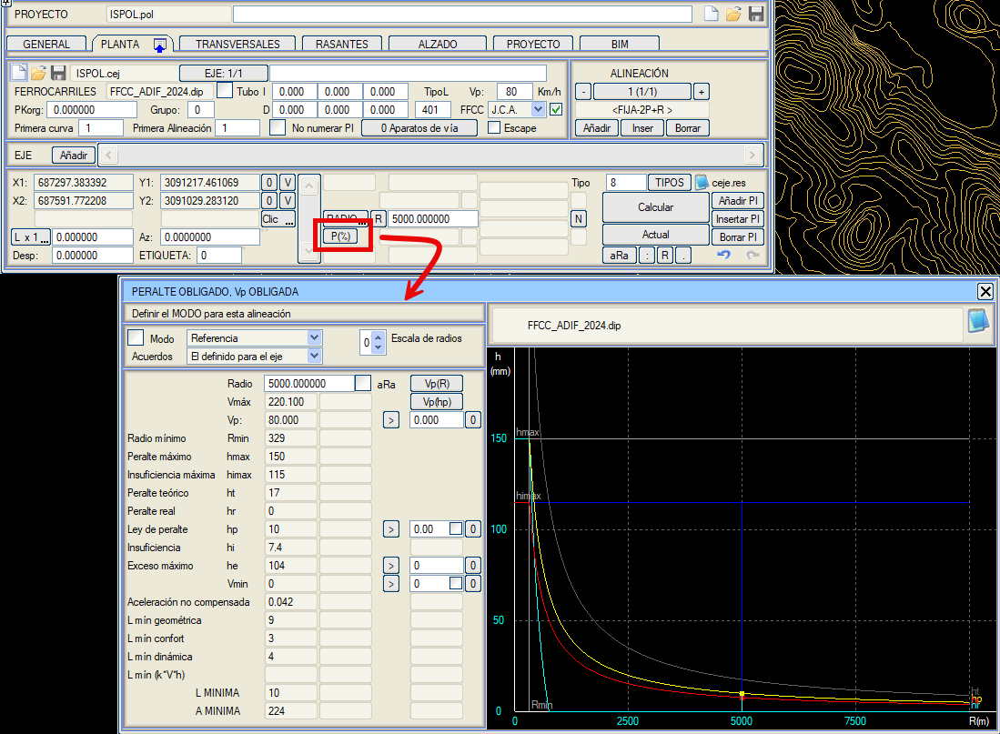
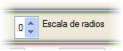Bu tabloda, grafik için üç farklı yatay ölçek seçilebilir:
[Vp(hp)] düğmesinden yola çıkarak, Proje Hızını hesaplar, böylece hp deveri zorunlu deverle çakışır. Fonksiyon, tasarım tablosunun hız aralıklarının değişiminde sürekli olmadığından, eğer zorunlu dever, alt aralığın bu aralığın maksimum hızı için olan deveri ile üst aralığın aynı hız için olan deveri arasında ise, o zaman üst aralık için bu hız atanır ve buna zorunludan daha yüksek bir dever karşılık gelir. 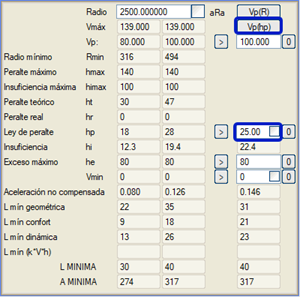
[Vp(R)] düğmesinden yola çıkarak, minimum yarıçapın kurbun yarıçapına eşit olmasını sağlayan maksimum Vp hızı hesaplanır. Fonksiyon, tasarım tablosunun hız aralıklarının değişiminde sürekli olmadığından, alt aralığın mümkün olan en yüksek hızı alınır, bu da yarıçapın minimum yarıçaptan büyük olmasını sağlar. Zorunlu dever ve zorunlu hız tanımı için diyalog kutusu içinde, iki ana veri sütunu ayırt edilebilir. Bunlardan ilki, kurbun zorunlu hızını dikkate almadan, bölümün hızıyla hesaplanan tüm verileri korur. Sağdaki grafikte, dever ve dever noksanlığı kurplarının gösterimi ve tabloda bulunan hp ve hi değerlerini temsil eden renkli noktalar gösterilir:
Vmin'in hemen sağındaki kutucukla
bunu etkinleştirebiliriz ve program bize, daha yavaş trafikleri
paylaşan hatları denemek için Rmin ve Hmax'ı yeniden hesaplama seçeneği
sunar. Proje Hızı (Vp) ve yavaş trafikler için hız (Vmin) bir değer
girildiğinde, her iki trafiğin de sınırlar içinde olduğundan emin olmak
için Minimum Yarıçapı artırmak (ve Maksimum Deveri azaltmak) gerekip
gerekmediğini belirlemek için maksimum noksanlık ve maksimum fazlalık
kullanılır.
Bu zorunlu değerler, her kurp için çalışma oturumu boyunca bellekte kalır. Kaydedilmeleri için, oturumu terk etmeden önce onları depolayan plan eksenleri .cej dosyasının kaydedilmesi gerekir. Deverlerin hesaplanması için otomatizmlerden herhangi biri kullanılırsa ve zorunlu bir dever varsa, bu, dever diyagramında gri renkte görüntülenir. Ayrıca pencerede ‘DİKKAT: ZORUNLU DEVER’ mesajı gösterilir. 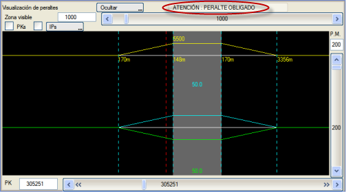
|
|||||||||||||||||||||||||||||||||||||